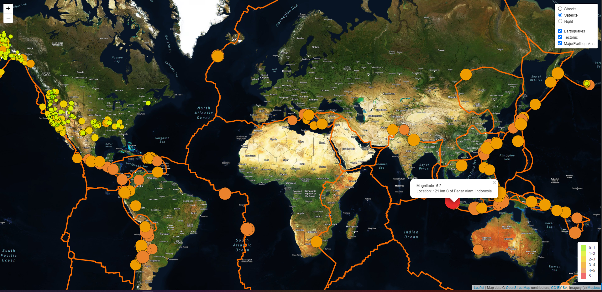

World Happiness
Haja | Cara | Clarissa | Nathan
“The answer to the great question...of Life,
the Universe and Everything...is...forty-two.”
— Douglas Adams
Questions We're
Looking To Answer
- Where is the happies palace in the world to live
- which factors affect happiness the most
- what does the ranking look like on a map
- what are the top 10 and botom 10 happiess places on earth
Presentation
- "World Happiness Report-Happiness scored according to economic production, social support, etc"
Kaggle Dataset
Reasoning
- Each individual in this group come from different backgrounds and would like to analysis different counties happiness index
Description of their source of data
- The data includes the happiness index of different countries as well index for different factors that effect that happiness index ,
which include family, freedom and government. There are 5 tables in all from the year 2015 to 2019.
Heatmap Analysis
R Studio will be used to create a linear regression that represents the happiness of people across the world. Python will be used to clean data and to create data visualizations. Tableau will be used to create data visualizations and to create a happiness dashboard. SQL will be used to look up information and to join tables..
Live Demo Using RStudio, the data was grouped by region and then shows the average happiness score for that region and year. First, a year column was added to each dataset. Then the two tables were added together in order to be able tot compare the data from each year. Then the tables were grouped by region and year and then summarized by the average happiness score. Then the heatmap was created where x is the region, y is the year and the color is based on the average happniess score. From the heatmap it can be seen that the regions 'Australian and New Zealand' and 'North America' have higher average happiness scores. The lowest average is the 'Sub-Saharan Africa'.

Project Creations/Code

First slide label

Second slide label